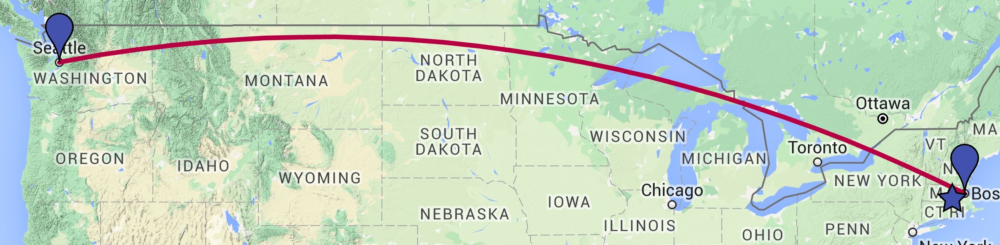

I'm Matt. I'm from Millbury, MA and I enjoy seafood, chocolate, computers, biking, running, and playing the guitar!
I graduated from Northeastern University in Boston, MA in 2013. During the course of my education at Northeastern, I worked on three six month
co-op positions at Boston area companies, where I received a wealth of experience working as a software engineer.
In September 2013, I relocated to Seattle, WA. Until December 2016, I worked as a Software Development Manager at
Cyanogen. More recently, I joined Facebook as a Software Engineer on Profile/Timeline and I could not be more excited! Check out my LinkedIn for more information about my career.